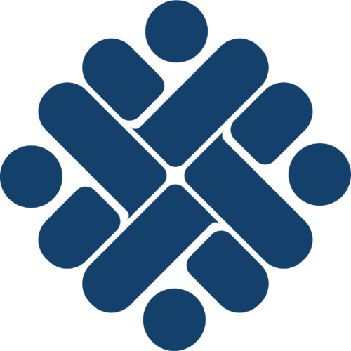
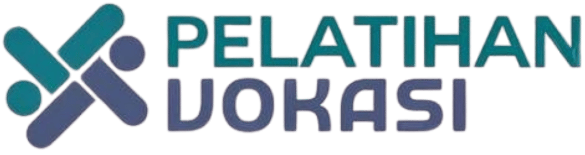

Pengoperasian Mesin Bubut.
Lihat Kelas
Dasar pengoperasian mesin bubut konvensional secara aman dan sesuai standar industri.
Kejuruan Teknik Manufaktur di BBPVP Serang adalah bidang pelatihan vokasi milik Kementerian Ketenagakerjaan RI guna mencetak tenaga kerja siap pakai dan bersertifikasi.


Kategori Kelas yang ada di Kejuruan Manufaktur
Dasar pengoperasian mesin bubut konvensional secara aman dan sesuai standar industri.
Mengoperasikan mesin CNC dan bubut dasar secara aman dan efisien.
Menggambar dan memodelkan objek teknik dalam format 3D dengan perangkat lunak CAD.
Memantau kondisi mesin dengan sensor untuk memprediksi kerusakan sebelum terjadi.
Memuat testimoni...
Pilih kelas yang diminati lalu klik tombol Daftar, atau hubungi kami lewat WhatsApp. Tim kami akan menjelaskan jadwal dan persyaratannya.
Kejuruan Teknik Manufaktur BBPVP Serang bertujuan mencetak tenaga kerja siap pakai dan bersertifikasi. Detail jenis sertifikat dapat ditanyakan ke admin.
(Isi sesuai ketentuan BBPVP, misalnya apakah kelas dasar terbuka untuk pemula.)
(Isi sesuai ketentuan BBPVP untuk tiap kelas.)